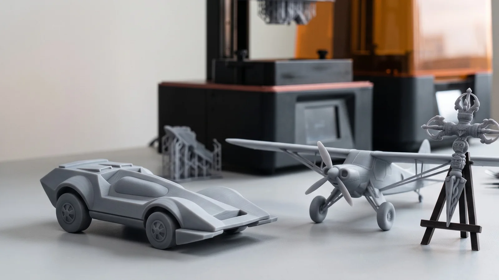

3D printing is often the fastest way to hold a new or modified part in your hand. But many projects don't start with a CAD model; they start with a physical object: a part to replace, modify or test. Combining 3D scanning, CAD and 3D printing turns a real part into a prototype quickly and accurately.
When does "scan to print" make sense?
- Fit and assembly checks: print a replacement or modified part to test fit before tooling or machining
- Design iteration: scan an existing product, modify it in CAD, print the new version, repeat
- Spare parts and low volumes: small plastic parts, brackets, covers and knobs that are no longer available
- Jigs and fixtures: custom holders shaped exactly to a scanned part
- Presentation and scale models: physical models for clients, exhibitions and approvals
The workflow
1. Scan
The part is 3D scanned to capture its geometry. For simple decorative copies, the scan mesh can sometimes be printed almost directly after cleanup.
2. Model or repair
For engineering parts, the scan is turned into proper CAD, so you can change wall thicknesses, hole sizes and features, and so the print reflects the design intent rather than the wear on the original.

3. Prepare for printing
A printable file needs more than geometry:
- A watertight mesh with no holes or inverted faces
- Minimum wall thickness suited to the process
- Orientation and supports chosen for strength and surface quality
- Tolerances adjusted for mating parts and shrinkage
- Scaling, if it's a scale model
4. Print and finish
After printing, parts are cleaned, supports removed, and if needed sanded, primed or painted.
Choosing a 3D printing process
| Process | Strengths | Typical uses |
|---|---|---|
| SLA (resin) | Very fine detail, smooth surfaces | Visual prototypes, small precise parts, jewellery masters, miniatures |
| FDM (filament) | Low cost, larger sizes, engineering plastics | Fixtures, brackets, large concept models |
We print in-house with FDM and SLA. The right choice depends on size, strength, surface finish and budget. Tell us what the part needs to do and we'll recommend one.

Tips for a successful prototype
- Define the purpose: a fit-check part, a functional test and a showroom model need different processes and finishes
- Share mating parts: if the print must fit something, send that part or its data too
- Don't over-specify: a prototype rarely needs production tolerances everywhere, only on the features that matter
- Plan the next step: if the prototype works, will you injection-mould, cast or machine it? Designing with that in mind saves time later
3D scanning and 3D printing in Coimbatore, India and the UAE
VShark Solutions brings scanning, CAD and printing together, so one team takes your part from object to prototype. We work with manufacturers and designers in Coimbatore and across India, and with clients in the UAE. Explore our 3D printing service, or send us your part or idea.